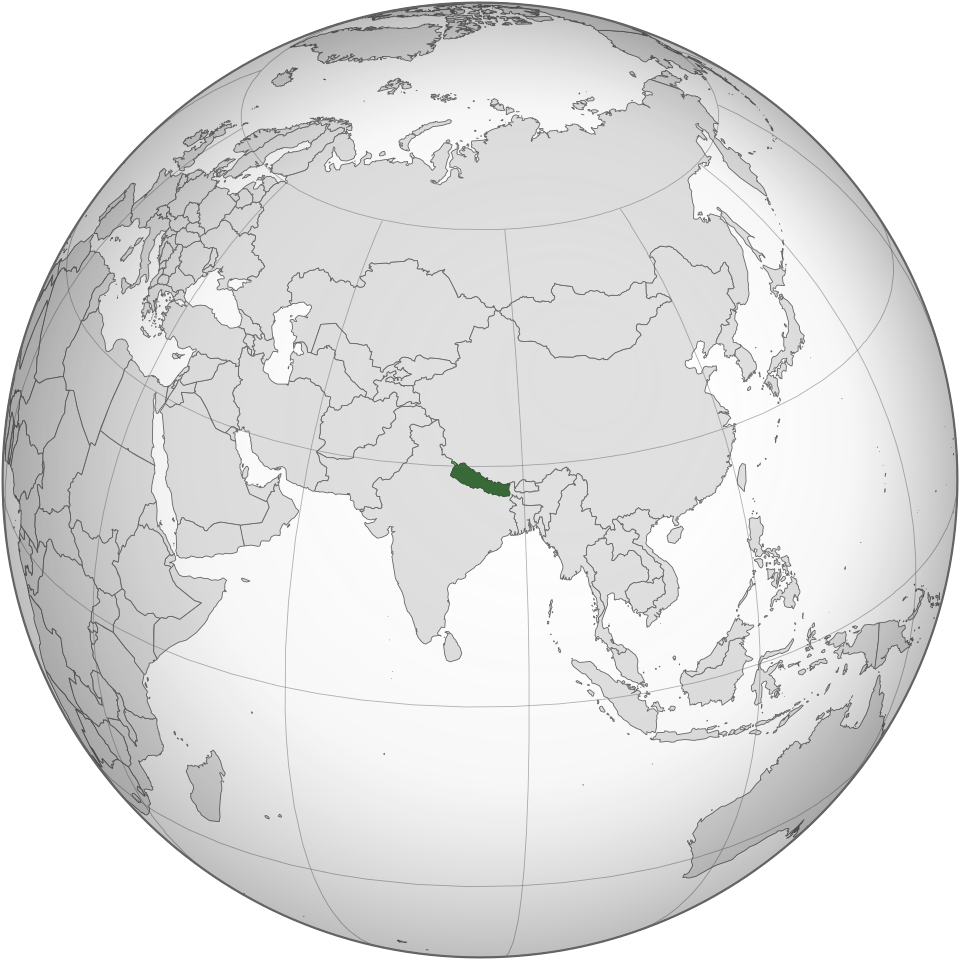

🏔️ Cultura
A cultura nepalesa possui fortes influências hinduístas e budistas. Festivais tradicionais, templos, música, dança e artesanato fazem parte da identidade do país.

O Nepal é um país localizado no sul da Ásia, entre a Índia e a China. É famoso por suas montanhas, templos, rica cultura e por abrigar o Monte Everest, a montanha mais alta do mundo.
A cultura nepalesa possui fortes influências hinduístas e budistas. Festivais tradicionais, templos, música, dança e artesanato fazem parte da identidade do país.
A culinária do Nepal combina influências indianas, tibetanas e próprias da região do Himalaia.
A bandeira do Nepal é única entre as bandeiras nacionais: ela não possui formato retangular. É formada por dois triângulos sobrepostos que representam as montanhas do país.